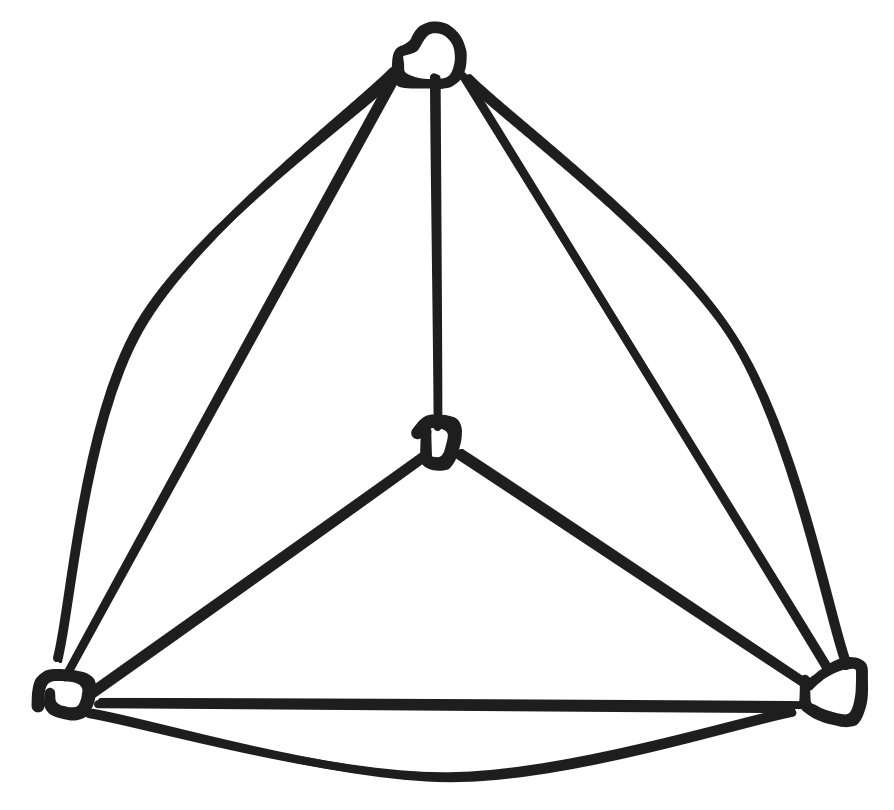

In the previous post, we mainly
focus on the algorithmic part of integral and fractional base packing
and base covering. In this post we consider packing and covering of
matroid circuits.
Theorem1
Let \(M=(E,I)\) be a matroid without
coloop. Then one has \[\theta(M)-\kappa(M)\leq r^*(M)-\nu(M),\]
where \(\theta(M)\) is the minimum
number of circuits whose union is \(E\), \(\kappa(M)\) is the number of connected
components in \(M\), \(r^*\) is the corank and \(\nu(M)\) is the max number of disjoint
circuits.
The left hand side \(\theta(M)-\kappa(M)\) is called the
circuit covering defect and the right hand side \(r^*(M)-\nu(M)\) is called the circuit
packing defect. I guess the name “covering defect” comes from the
fact that \(\theta(M)-\kappa(M)\) is
the gap between the circuit covering number and a lowerbound \(\kappa(M)\). \(\kappa(M)\leq \theta(M)\) since there is no
circuit containing two elements in different components. The packing
defect is the set-point dual of the covering version. To see the
duality, one can write \(\kappa(M)\) as
the max size of \(X\subset E\) such
that \(|C\cap X|\leq 1\) for all
circuit \(C\) and write \(r^*(M)\) as the minimum size of \(X\subset E\) such that \(|X\cap C|\geq 1\) for all circuit \(C\).
2 Complexity
Computing the corank \(r^*\) and the
component number \(\kappa(M)\) is easy.
What about \(\theta(M)\) and \(\nu(M)\)?
The problem of determining if a sparse split graph (a special case of
chordal graphs) can have its edges partitioned into edge-disjoint
triangles is NP-complete [2]. So finding \(\theta(M)\) and \(\nu(M)\) is NP-hard even for some special
graphic matroids.
3 Cycle Double Cover
Cycle double
cover conjecture is a famous unsolved problem posed by W. T. Tutte,
Itai and Rodeh, George Szekeres and Paul Seymour. The cycle double cover
conjecture asks whether every bridgeless undirected graph has a
collection of cycles such that each edge of the graph is contained in
exactly two of the cycles.
[3] is a nice
survey. However, there is little discussion about (even simplier version
of) circuit double cover on some special case of matroids. For example,
this
question on math.sx is a relaxation of faithful CDC on matroids.
Problem2Not so faithful circuit
cover
Given a matroid \(M=(E,\mathcal I)\)
and a non-negative integral weight function \(w:E\to \Z_{\geq 0}\), decide if there is a
multiset of circuits of \(M\) such that
each element in \(E\) is covered by at
least 1 and at most \(w(e)\) circuits
in the multiset.
[4] studied
a related (and seemingly simplier) optimization variant. How many
circuits can we pack with element capacity \(k
w(e)\)?
\[\begin{equation*}
\begin{aligned}
\nu_{k,w}=\max& & \sum_C x_C& & &\\
s.t.& & \sum_{C:e\in C} x_C &\leq k
w(e) & &\forall e\in E\\
& & x_C &\in \Z_{\geq 0}
\end{aligned}
\end{equation*}\]\[\begin{equation*}
\begin{aligned}
\tau_{k,w}=\min& & \sum_e w(e)&y_e & &\\
s.t.& & \sum_{e\in C} y_e &\geq
k & &\forall \text{ circuit $C$}\\
& & y_e &\in \Z_{\geq 0}
\end{aligned}
\end{equation*}\]
Clearly the linear relaxation of \(\nu_{k,w}\) and of \(\tau_{k,w}\) are LP dual of each other and
have the same optimum. For what class of matroids do we have equality
\(\nu_{k,w}=\tau_{k,w}\) for any weight
function \(w\)?
When \(k=1\) this is relatively simple.
First we can assume that \(M\) contains
no coloop since coloops won’t appear in any circuit. Suppose that there
are two circuits \(C_1,C_2\) whose
intersection is non-empty. Let \(a,b,c\) be the smallest weight of elements
in \(C_1,C_2, C_1\cap C_2\)
respectively. It follows by definition that \(a\leq c\) and \(b\leq c\). The max number of circuits we
can pack in the matroid \(M|_{C_1\cup
C_2}\) is \(\min(a+b,c)\). Now
we further assume that \(a,b\leq c\leq
a+b\). The minimum weight of elements hitting every circuit is
not necessarily \(c\), since by the
circuit axiom there must another circuit \(C'\in C_1\cup C_2-e\) for any \(e\in C_1\cap C_2\) which won’t be hit if we
are selecting element in \(C_1\cap
C_2\). Thus for the case of \(k=1\), any matroid satisfying \(\nu_{1,w}=\tau_{1,w}\) has no intersecting
circuits.
The characterization of matroids satisfying \(\nu_{2,w}=\tau_{2,w}\) is the following
theorem [4].
Theorem3
A matroid satisfies \(\nu_{2,w}=\tau_{2,w}\) iff none of its
minor is isomorphic to \(U_{2,4},F_7,F_7^*,M(K_{3,3}),M(K_5^-)\) or
\(M(K)\), where \(K_5^-\) is \(K_5\) deleting an edge and \(K\) is a special 4-node graph.
 Graph
K
Their proof is also based on LP. In fact they prove the following
theorem.
Theorem4
Let \(M\) be a matroid. The following
statements are equivalent:
\(M\) does not contain \(U_{2,4},F_7,F_7^*,M(K_{3,3}),M(K_5^-)\) or
\(M(K)\) as a minor;
the linear system \(\{ \sum_{e\in C} y_e
\geq 2 \;\forall C, y_e\geq 0\}\) is TDI;
the polytope \(\{y: \sum_{e\in C} y_e \geq
2 \;\forall C, y_e\geq 0\}\) is integral.
\(2\to 3\) is easy. To show \(3\to 1\) they prove that if \(M\) satisfies 3 then so do its minors and
none of the matroids in 1 satisfies 3. The hard part is proving \(1\to 2\), for which they use the following
two lemmas.
Lemma5
If \(M\) satisfies 1, then \(M=M^*(G)\) for some graph \(G\) that contains neither the planar dual
of \(K\) nor of \(K_5^-\) as a minor.
Proof
A matroid \(M\) is regular iff it has
no minor isomorphic to \(U_{2,4},F_7,F_7^*\). Then \(M\) must be regular since it satisfies 1.
The lemma then follows from the “excluded minor characterization of
graphic matroids in regular matroids”. A regular matroid is cographic
iff it has no minor isomorphic to \(M(K_5)\) and \(M(K_{3,3})\). (see Corollary 10.4.3 in
Oxley’s Matroid Theory book 2nd edition)
Lemma6
If a graph \(G\) contains neither the
planar dual of \(K\) nor of \(K_5^-\) as a minor, then \(M^*(G)\) satisfies 2.
This is the hardest part and it takes a lot of work to prove it.
They first prove a complete characterization of grpahs that contain
neither the planar dual of \(K\) nor
that of \(K_5^-\) as a minor using
\(0,1,2\)-sum and then prove that
summing operations preserves the TDI property.
The \(0,1,2\)-sum theorem looks like
this. Let \(K^*\) and \(P\) be the planar dual of graph \(K\) and \(K_5^-\) respectively.
Theorem7informal, thm 3.1 in [4]
A simple graph \(G\) has no minors
\(P\) and \(K^*\) iff \(G\) can be obtained by repeatedly taking
\(0,1,2\)-sums starting from some small
graphs and from some cyclically 3-connected graphs with no minors \(P\) and \(K^*\).
It remains to show that all the summand graphs in the above theorem have
the TDI property.
some notes on TDI (cf. section 22.7 in [5])
Let \(A\) be a rational matrix and
\(b\) be an integral vector. For any
rational \(c\) we have the following
inequalities:
\[\begin{equation*}
\begin{aligned}
&\max \set{ cx| Ax\leq b; x\geq 0; \text{$x$ integral}} \\
\leq &\max \set{ cx| Ax\leq b; x\geq 0}\\
= &\min \set{ yb| yA\geq c; y\geq 0}\\
\leq &\min \set{ yb| yA\geq c; y\geq 0; \text{$y$
half-integral}}\\
\leq &\min \set{ yb| yA\geq c; y\geq 0; \text{$y$ integral}}
\end{aligned}
\end{equation*}\]
If we have equality on the last two \(\leq\) for all integral \(c\), then then all five optima are equal
for each integral vector \(c\). It
suffices to require that the last two optimum are equal for each
integral \(c\).
Theorem8
The rational system \(Ax\leq b\) is
TDI, iff \(\min \set{ yb| yA\geq c; y\geq 0;
\text{$y$ half-integral}}\) is finite and is attained by integral
\(y\) for each integral \(c\) such that \(\min \set{ yb| yA\geq c; y\geq 0}\) is
finite.
This is exactly the case of \(k=2\) in
the characterization of matroids with \(\nu_{2,w}=\tau_{2,w}\).
The above theorem on TDI reduces proving that \(\{ \sum_{e\in C} y_e \geq 2 \;\forall C, y_e\geq
0\}\) is TDI to proving that \(\tau'=\max \{ \sum_C x_C |\sum_{C:e\in C}
\frac{1}{2} x_e \geq w(e) \;\forall e, x_C\geq 0, \text{ $x_C$
half-integral}\}\) has an integral optimal solution for all
nonnegative integral \(w.\)
Recall that it remains to prove that some cographic matroids have the
above property. The set of circuits corresponds to cuts in graphs. A
graph is good if its cographic matroid satisfies that \(\tau'\) has an integral optimal
solution. They further characterizes good graphs using cuts.
Let \(\mathcal C\) be a
collection(multiset) of cuts in \(G\).
\(\mathcal C\) is truncatable if there
is another collection \(\mathcal D\) of
cuts in \(G\), such that
\(|\mathcal D|\geq |\mathcal
C|/2\),
Let \(d_{X}(e)\) for a collection
\(X\) be the number of elements in
\(X\) containing \(e\). \(d_{\mathcal D}(e)\leq 2 \floor{d_{\mathcal
C}(e)/4}\) for all \(e\)
A graph \(G\) is truncatable if every
collection of its cuts is truncatable. They shows that a graph is good
if and only if it is truncatable. Then this becomes a graph theory
problem. They provides some sufficient condition for graphs to be
truncatable and manage to prove all the graphs we are interested in are
good. (a 16-page long proof)
Ding and Zang’s work [4] characterizes matroids that satisfy
\(\nu_{2,w}=\tau_{2,w}\). As noted
before and in their paper, matroids that satisfy \(\nu_{1,w}=\tau_{1,w}\) must be direct sums
of circuits (if there is no coloop). The \(k=1\) result can be understood as finding
matroids whose integral circuit packing number and integral circuit
hitting set number are equal. One may wonder if people have studied
similar things on matroid bases. There are lots of works (see refs in this paper) on homogeneous
matroids which have the property that fractional base packing number
(strength) equals to fractional base covering number (fractional
arboricity or density). However, the analogous question for bases should
be characterizing matroids with \(\text{cogirth}=\floor{\text{strength}}.\)
Is this problem interesting or is there any existing paper?
Updated on Aug 14th. Yes, there is existing paper
characterizing matroids with \(\lambda=\floor{\sigma}.\)
Let \(M\) be a matroid with \(\floor{\sigma(M)}\geq k\). We call \(M\)\(k\)-reducible if \(\lambda(M)=\floor{\sigma(M)}=k\). Otherwise
\(M\) is \(k\)-irreducible. Let \(C_1^*,\ldots,C_\ell^*\) be the set of
minimum cocircuits of \(M\). Then the
crux of \(M\), denoted \(\chi(M)\), is defined to be \[
\chi(M)=M\setminus\bigcup_{i=1}^\ell C_i^*.
\]
Let \(\delta(M)\) be the number of
connected components of \(\chi(M)\).
Assume that \(\chi(M)\) has \(d\) connected components \(K_1,\ldots,K_d\). For each minimum
cocircuit \(C_j^*\) of \(M\), let \(\nu_j\) denote the largest subset of \(\set{K_1,\ldots,K_d}\) such that the
restriction of \(M\) to \(C_j^*\cup \left( \bigcup_{K\in \nu_j} K
\right)\) is connected. Then the assembly hypergraph of \(M\) , denoted \(\mathcal H(M)\), is the non-uniform
hypergraph whose vertices are labelled by the connected components \(K_1, . . . , K_d\), where the hyperedges
are labelled by the cocircuits \(C_1^*,\ldots,C_\ell^*\), and the vertices
incident with \(C_j^*\) are precisely
the members of \(\nu_j\).
Theorem9Theorem 21 in [6]
Suppose that \(M\) is a matroid for
which \(\floor{σ(M)} = λ(M) = k\). Then
we have the following.
There exists a unique set of k-irreducible matroids \(\mathcal M= \{M_1, . . . , M_m\}\) (for
some integer \(m\)).
There exists a unique rooted tree \(R\) with \(m\) leaves labelled by \(M_1, . . . , M_m\), such that the root is
labelled by \(M\) and each non-leaf
labelled by \(K\) has \(d= δ(K)\) children, labelled by the
connected components of \(\chi(K)\).
For each non-leaf, labelled by \(K\) and its \(d\) children labelled \(K_1, . . . , K_d\), there exists a unique
assembly hypergraph with \(\ell\)
hyperedges, and where \(\sum_{i=1}^d
r(K_i)=r(K)-\ell\).
References
[1]
P.D. Seymour, Packing and covering with matroid
circuits, Journal of Combinatorial Theory, Series B. 28 (1980)
237–242 10.1016/0095-8956(80)90067-2.